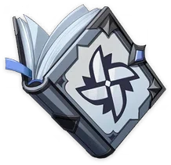

Currency
Common currency. The one
language everybody speaks.
Weapons
The currency is accepted
worldwide in Teyvat. It is also considered a "catalyst"
which can bring about physical transformation, which
explains its usage in crafting. It is named after its
creator, the Geo Archon Morax.
Artifacts
The currency is accepted
worldwide in Teyvat. It is also considered a "catalyst"
which can bring about physical transformation, which
explains its usage in crafting. It is named after its
creator, the Geo Archon Morax.
Character Development Items


Talent Level-Up material.
Freedom is the spirit of the land of the wind.
The freedom of travel is one of such. It is the freedom
to traverse the land freely without being obstructed.
Talent Level-Up material.
Resistance is the backbone of the city of Wind.
The history of Mondstadt is one of resistances. People
rose up to grant the citizens of Mondstadt the freedom
they now enjoy, like the Anemo Archon blowing away the
snow, or like Vennessa rising up to fight.
Talent Level-Up material.
Resistance is the backbone of the city of Wind.
The history of Mondstadt is one of resistances. People
rose up to grant the citizens of Mondstadt the freedom
they now enjoy, like the Anemo Archon blowing away the
snow, or like Vennessa rising up to fight.